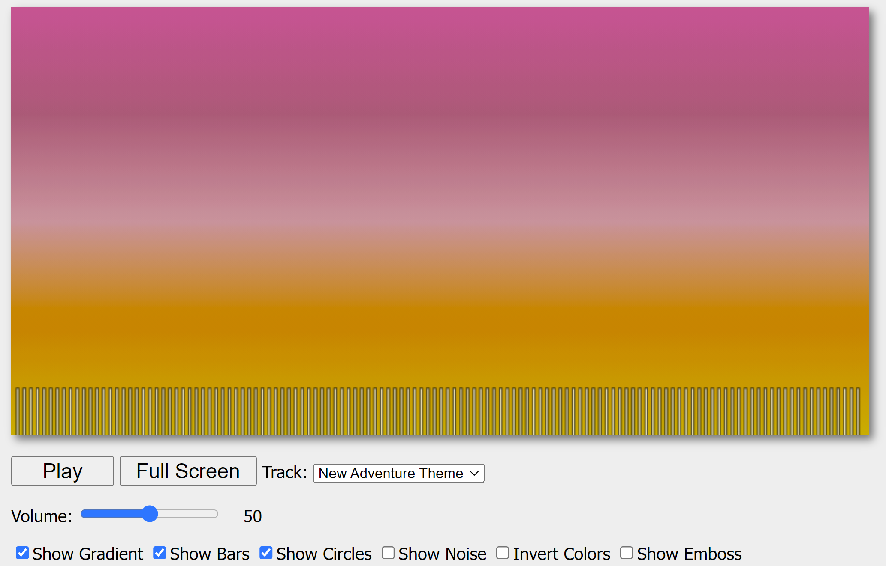

???
???
This project is a cleaner, more refined and unique remake of the original audio-vizualizer, shown to the right. It is designed so that the sunflowers resize themselves according to the center node of the audio graph, and the bars follow the path of every 16 nodes.
